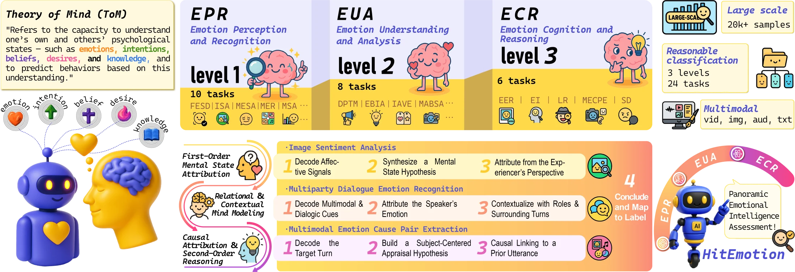
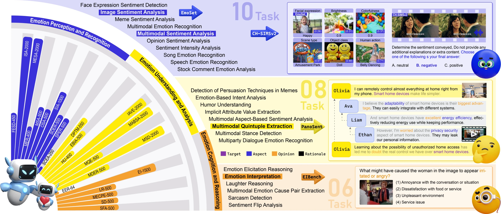

Level 1 10 tasks
Emotion Perception and Recognition
Identify explicit emotional signals across modalities and attribute an immediate emotional state.
Examples Image sentiment analysis, speech emotion recognition.
Correspondence: Hao Fei · haofei37@nus.edu.sg
From emotion recognition to emotional reasoning
HitEmotion evaluates how models perceive, understand, and reason about emotions. Our ToM-guided reasoning and TMPO method explicitly track the mental states behind them.

Benchmark statistics: Table 1 in the paper.
The research
Despite rapid progress in multimodal large language models (MLLMs), their capability for deep emotional understanding remains limited. We argue that genuine affective intelligence requires explicit modeling of Theory of Mind (ToM), the cognitive substrate from which emotions arise. To this end, we introduce HitEmotion, a ToM-grounded hierarchical benchmark that diagnoses capability breakpoints across increasing levels of cognitive depth.
Second, we propose a ToM-guided reasoning chain that tracks mental states and calibrates cross-modal evidence to achieve faithful emotional reasoning. We further introduce TMPO, a reinforcement learning method that uses intermediate mental states as process-level supervision to guide and strengthen model reasoning. Extensive experiments show that HitEmotion exposes deep emotional reasoning deficits in state-of-the-art models, especially on cognitively demanding tasks.
In evaluation, the ToM-guided reasoning chain and TMPO improve end-task accuracy and yield more faithful, more coherent rationales. In conclusion, our work provides the research community with a practical toolkit for evaluating and enhancing the cognition-based emotional understanding capabilities of MLLMs.
The HitEmotion benchmark
We curate and align 24 datasets spanning sentiment, humor, sarcasm, and causal reasoning to diagnose where model capabilities break down as tasks demand deeper understanding.
Level 1 10 tasks
Identify explicit emotional signals across modalities and attribute an immediate emotional state.
Examples Image sentiment analysis, speech emotion recognition.
Level 2 8 tasks
Connect emotions to their context, targets, and communicative intentions.
Examples Humor understanding, multimodal aspect-based sentiment analysis.
Level 3 6 tasks
Infer emotional causes, track changes over time, and reason about others’ perspectives.
Examples Emotion interpretation, sarcasm detection, sentiment flip analysis.

ToM-guided reasoning + TMPO
A structured reasoning process, followed by supervised fine-tuning and preference optimization, connects multimodal evidence to emotional understanding.
Task-specific ToM prompts guide models to track beliefs, intentions, and emotions, while calibrating cross-modal evidence.
ToM-aligned supervised fine-tuning teaches the model to produce structured reasoning chains and task-specific answers.
Preference optimization uses intermediate mental states as process-level supervision and rewards to improve reasoning faithfulness and consistency.
Build on this work
Cite our ICLR 2026 paper if you use HitEmotion or TMPO in your research.
@inproceedings{luo2026cognitivecompass,
title = {Unveiling the Cognitive Compass: Theory-of-Mind-Guided Multimodal Emotion Reasoning},
author = {Luo, Meng and Li, Bobo and Xu, Shanqing and Zhang, Shize and Chen, Qiuchan and Han, Menglu and Chen, Wenhao and Huang, Yanxiang and Fei, Hao and Lee, Mong-Li and Hsu, Wynne},
booktitle = {International Conference on Learning Representations},
year = {2026},
url = {https://openreview.net/forum?id=8VSrk2CaBr}
}